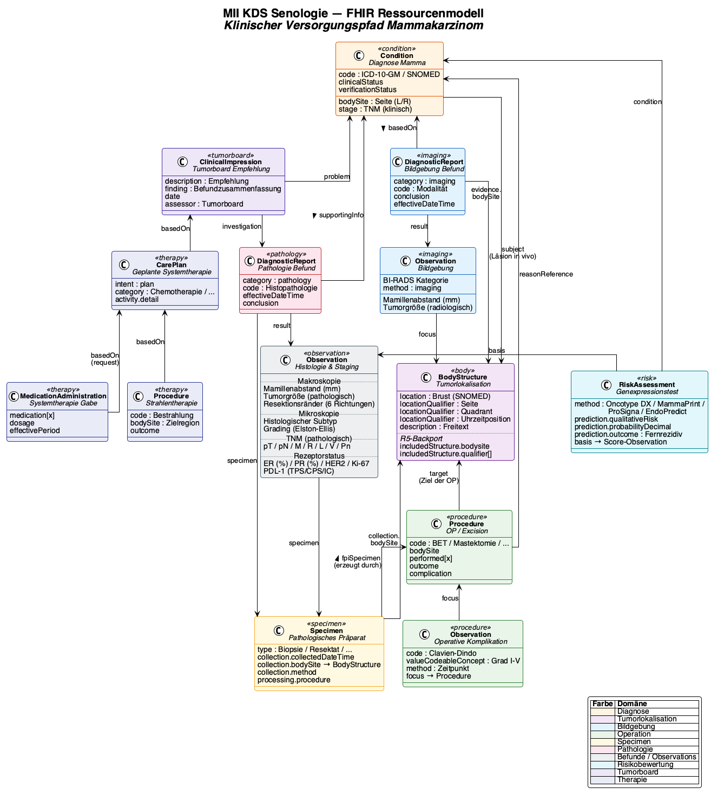

Kerndatensatz Senologie
0.1.0 - ci-build
Kerndatensatz Senologie - Local Development build (v0.1.0) built by the FHIR (HL7® FHIR® Standard) Build Tools. See the Directory of published versions

Die systemische Therapie umfasst alle medikamentösen Behandlungen des Mammakarzinoms. Die Auswahl richtet sich nach dem molekularen Subtyp (HR+/HER2-, HER2+, Triple-Negative), dem Stadium und der klinischen Situation (neoadjuvant, adjuvant, palliativ). Die Komplexität liegt darin, dass mehrere Therapiearten kombiniert werden, sich über Monate erstrecken und ihre Dokumentation sowohl die Empfehlung als auch die tatsächliche Durchführung abbilden muss.
| Art | Typische Substanzen | MII Onko Code | Indikation |
|---|---|---|---|
| Chemotherapie | Anthracycline, Taxane, Platin | CH | Alle Subtypen (v.a. TNBC, HER2+) |
| Hormontherapie | Tamoxifen, Aromataseinhibitoren, GnRH | HO | HR+ |
| Zielgerichtete Therapie | Trastuzumab, Pertuzumab, CDK4/6i | ZS | HER2+, HR+/HER2- |
| Immuntherapie | Pembrolizumab | IM | TNBC (PD-L1+) |
| Kombinationen | Chemo + Immun, Chemo + zielgerichtet | CI, CZ, CIZ | Je nach Schema |
Die Dokumentation der Systemtherapie unterscheidet zwischen:
Diese Dreiteilung spiegelt den klinischen Alltag wider: Nicht jede Empfehlung wird umgesetzt, nicht jede Verordnung wird wie geplant durchgeführt (Dosisreduktionen, Therapieabbruch wegen Nebenwirkungen).
Die Kodierung der Substanzen erfolgt über ATC-Codes (BfArM ATC-DE). Das MII Onko Modul stellt ein umfassendes ValueSet mit über 400 ATC-Codes für systemische Tumortherapie bereit, das alle relevanten Substanzklassen einschließlich endokriner Therapie abdeckt.
Protokollbezeichnungen (z.B. EC-Pac, TCHP, FEC-D) liegen in der klinischen Dokumentation derzeit nicht vollständig strukturiert vor. Strukturierungsvorschläge werden im MII Modul Onkologie erarbeitet.
Die endokrine (antihormonelle) Therapie illustriert exemplarisch die Herausforderungen einer einheitlichen Abbildung. Je nach Blickwinkel wird sie unterschiedlich eingeordnet:
| Perspektive | Einordnung | Kodierung |
|---|---|---|
| ATC-Klassifikation | Eigene Hauptgruppe L02 (Endokrine Therapie), getrennt von L01 (Antineoplastische Mittel) | L02BA, L02BG, L02AE |
| Krebsregistermeldung (oBDS) | Systemtherapie mit Therapieart "Hormontherapie" | Art = HO |
| OPS (KIS-Kodierung) | Eigenständiger OPS-Code | 8-543 Hormontherapie bei Neubildungen |
| Klinische Wahrnehmung | Häufig als eigenständige Kategorie neben "Chemotherapie" betrachtet | — |
| DKG/OncoBox | Eigener Dokumentationsblock mit Substanzklassen (Tamoxifen, AI, GnRH, Fulvestrant, CDK4/6i) | Numerische Codes 1–5 |
Dieselbe Therapie — Tamoxifen 20 mg täglich über 5 Jahre — wird also je nach Empfänger als endokrine Therapie, als Hormontherapie, als Systemtherapie oder als eigenständige Prozedur klassifiziert und kodiert. Für die Patientin und das behandelnde Team ist es schlicht "die Tablette nach der OP".
Diese Komplexität macht eine einheitliche Abbildung umso wichtiger: Das Datenmodell bildet die endokrine Therapie als Teil der Systemtherapie ab (Therapieart HO, Substanz über ATC) und stellt über ConceptMaps die Transformation in die jeweiligen Zielformate sicher. Die OncoBox-spezifische Substanzklassifikation (1=Tamoxifen, 2=Aromataseinhibitor, 3=GnRH-Analogon, 4=Fulvestrant, 5=CDK4/6-Inhibitor) wird dabei auf die internationalen ATC-Codes gemappt.
Bei metastasierter Erkrankung ist die Therapielinie (1., 2., 3. Linie) klinisch relevant und wird als Attribut an der Therapie dokumentiert. Das First-Line-Flag (KB-8) kennzeichnet die erste Systemtherapie bei Metastasierung — es ist nur bei palliativer Intention relevant.
Unerwünschte Wirkungen der Systemtherapie werden nach NCI CTCAE (Common Terminology Criteria for Adverse Events) in Grad 1–5 klassifiziert und als separate Ressourcen dokumentiert. Sie sind sowohl für die klinische Versorgung als auch für die Meldung an das Krebsregister (oBDS) relevant.